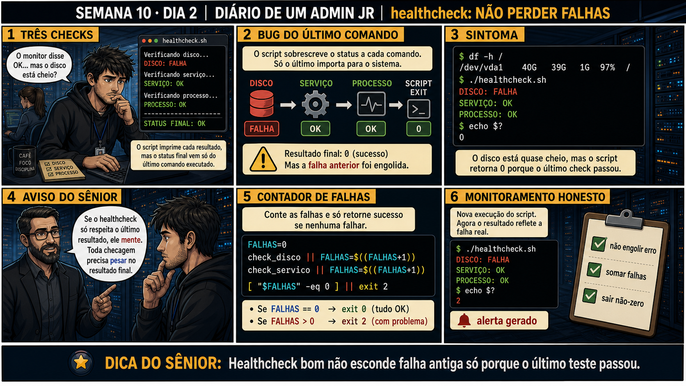

DIARIO DE UM ADMIN JR. | FASE 1 — LINUX, DO BÁSICO AO AVANÇADO
🔗 Conecta com ontem: o backup só declarava sucesso se cada etapa realmente
passasse. Hoje o mesmo princípio aparece num contexto diferente: um script de monitoramento que checa VÁRIAS
coisas só é confiável se ele lembrar de TODAS as falhas, não só da última checagem feita.
🔓 Privilégio de hoje: escrever healthchecks que não escondem falha antiga atrás
de um teste recente que passou. Você ganha o hábito de contar falhas ao longo de todo o script, não só
confiar no código de saída do último comando.
Semana 10 · Dia 2 | Nível Júnior
Healthcheck: Não Perder Falhas
healthcheck bom não esconde falha antiga só porque o último teste passou
ANTES DE ALTERAR, OBSERVE. DEPOIS DE ALTERAR, VALIDE.

1. O chamado
Seu healthcheck.sh verifica disco, serviço e processo, imprimindo cada
resultado — mas o disco está em 97% de uso (FALHA) e o script ainda termina com echo $?
mostrando 0 (sucesso), porque o código de saída reflete só o ÚLTIMO comando checado.
💡 Passa o mouse nas palavras destacadas pra ver uma dica rápida — clica se quiser a explicação completa com analogia.
2. O sênior te conta
Terça-feira, Semana 10
Ontem você escreveu um backup que só declarava sucesso se cada etapa realmente passasse. Hoje o mesmo
princípio aparece disfarçado de outro jeito, num contexto que engana até quem já sabe da lição.
Escrevi um healthcheck.sh que checava três coisas — disco, serviço, processo — imprimindo
o resultado de cada um. Parecia completo. Um dia o disco chegou a 97% de uso, uma falha real, séria. O
script imprimiu "DISCO: FALHA" na tela, exatamente como devia. Só que o sistema de monitoramento que
lia o exit code desse script nunca disparou o alerta. Rodei manualmente, testei
echo $? logo depois — 0. Sucesso. Com o disco em 97%.
O bug era mais sutil do que parecia. $? guarda o código de saída do ÚLTIMO comando
executado, sempre — cada novo comando SOBRESCREVE o valor anterior. O disco tinha sido checado primeiro
(falhou), mas o serviço e o processo, checados depois, passaram. O $? final refletia só o
processo — a falha do disco tinha sido "engolida" silenciosamente por checagens seguintes bem-sucedidas.
O texto na tela mostrava a verdade, mas o código de saída, que é o que o monitoramento realmente
lê, mentia.
A correção não foi reordenar os checks — isso só move o problema pra outra falha em posição diferente.
Foi usar um contador de falhas: uma variável que acumula cada checagem que falhar, ao longo do
script inteiro, e só no final decide o código de saída — [ "$FALHAS" -eq 0 ] || exit 2.
Nenhuma falha intermediária se perde, não importa a ordem. Hoje você escreve exatamente esse healthcheck,
testando de propósito falhas em posições diferentes até confiar que nenhuma delas escapa.
3. Decodificador de conceitos
Clica em qualquer termo pra ver a definição completa e uma analogia do dia a dia:
4. Ferramentas e leitura da evidência
Elemento
O que observar e por que importa
FALHAS=0
Contador inicializado em zero, antes de qualquer verificação.
check_disco || FALHAS=$((FALHAS+1))
Se a checagem falhar, incrementa o contador — nunca é sobrescrito pela checagem seguinte.
[ "$FALHAS" -eq 0 ] || exit 2
Só retorna sucesso se NENHUMA checagem falhou, não importa a ordem.
--- sem contador, bug do último comando ---
$ df -h /
/dev/vda1 40G 39G 1G 97% /
$ ./healthcheck.sh
DISCO: FALHA
SERVIÇO: OK
PROCESSO: OK
$ echo $?
0 # engoliu a falha do disco!
--- com contador de falhas ---
FALHAS=0
check_disco || FALHAS=$((FALHAS+1))
check_servico || FALHAS=$((FALHAS+1))
[ "$FALHAS" -eq 0 ] || exit 2
$ ./healthcheck.sh
DISCO: FALHA
SERVIÇO: OK
PROCESSO: OK
$ echo $?
2 # alerta gerado corretamente
5. Laboratório guiado — pegue na mão, comando por comando
Resultado esperado: "CHECK1: FALHA" aparece na tela, mas exit code final é 0 — a falha foi engolida, exatamente como na história.
Por que fizemos isso: reproduzir esse bug de propósito, com um exemplo mínimo, é o que torna concreto por que "aparece na tela" não é a mesma coisa que "reflete no exit code".
Cilada comum: confiar visualmente na saída de texto do script e nunca checar o $? de verdade — é exatamente essa lacuna que faz um sistema de monitoramento nunca disparar o alerta.
Ação: adicione um contador de falhas e repita o teste com a mesma falha no primeiro check.
Resultado esperado: exit code agora é 2 — a falha do primeiro check não se perdeu mais.
Por que fizemos isso: esse é o contador exato que teria feito o alerta disparar de verdade na história — cada falha soma, independente de checks seguintes terem passado.
Cilada comum: usar && em vez de || no encadeamento — && incrementaria o contador quando o check tivesse SUCESSO, invertendo toda a lógica.
Ação: teste com a falha no segundo e no terceiro check também, confirmando que o contador funciona em qualquer posição.
Resultado esperado: exit code 2 de novo, mesmo com a falha agora no meio (não mais na primeira posição).
Por que fizemos isso: testar a falha em posições diferentes é o que prova que a correção é estrutural, não um acaso que só funciona pro cenário específico testado antes.
Cilada comum: testar só um cenário de falha (sempre na mesma posição) e assumir que está tudo resolvido — o bug original só apareceu porque a falha não era a última checagem.
🧑🏫 Aqui entra o Mentor (em breve): se um healthcheck real não capturar uma falha esperada, este é o ponto onde o chat com o Sênior-IA vai ajudar a revisar a lógica.
Ação: teste também o caso onde todos os checks passam, confirmando que exit 0 continua funcionando corretamente.
Resultado esperado: exit code 0 — quando tudo está realmente saudável, o script confirma isso corretamente, sem falso alarme.
Por que fizemos isso: confirmar o caso totalmente saudável é o que garante que a correção não introduziu um novo problema, tipo alertar mesmo quando está tudo bem.
Cilada comum: testar só cenários de falha e nunca confirmar o caso saudável — um healthcheck que sempre alerta é tão inútil quanto um que nunca alerta.
Ação: documente cenários testados (falha em cada posição, tudo OK), exit codes obtidos em cada um.
# anote no seu diário de bordo:
Falha no check1 (primeiro): exit 2, capturado
Falha no check2 (meio): exit 2, capturado
Todos OK: exit 0, correto
Contador de falhas confirmado independente de ordem
Resultado esperado: registro completo reproduzindo o painel 6 da prancha de hoje.
Por que fizemos isso: esse registro com múltiplos cenários é a prova de que o healthcheck é confiável em qualquer situação, não só no caso que aconteceu de ser testado.
Cilada comum: documentar só um cenário — sem os múltiplos casos testados, fica impossível provar depois que a correção realmente cobre qualquer ordem de falha.
6. Antes de ver as opções — tenta responder
🧠 Recall ativo: por que echo $? no final de um script com vários checks só reflete
o resultado do ÚLTIMO comando?
$? sempre é
SOBRESCRITO a cada novo comando — se o disco falhou primeiro mas o processo (checado por último) passou,
$? no final mostra o resultado do processo, "engolindo" a falha do disco que aconteceu
antes. É preciso um
contador de falhas pra
não perder esse histórico.
QUESTÃO 1 de 3
7. Questão comentada — clica numa alternativa
Seu healthcheck mostra DISCO: FALHA mas termina com exit code 0, porque o
disco foi checado primeiro e os checks seguintes passaram. Qual é a correção correta?
💡 Analogia do Sênior para Fixar: O script de Healthcheck é o termômetro inteligente da UTI: checa se o serviço web responde código 200 e se o banco aceita conexões a cada 60 segundos.
QUESTÃO 2 de 3 — cenário de erro real
7.1 Com o contador implementado, o exit code agora é 2 mesmo com o disco checado primeiro — o que isso prova?
O mesmo cenário (disco em falha, checado primeiro) agora resulta em exit 2, gerando um
alerta real de monitoramento.
O que essa correção demonstra sobre a confiabilidade do healthcheck?
💡 Analogia do Sênior para Fixar: A saída estruturada em código de saída (exit 0 saudável, exit 2 crítico) é a luz verde e vermelha para os sistemas de monitoramento como Zabbix e Prometheus.
QUESTÃO 3 de 3 — detalhe que confunde todo iniciante
7.2 "exit 2 e exit 1 significam níveis diferentes de gravidade, tipo um sistema de pontuação?"
Um colega assume que exit 2 significa "mais grave" que exit 1, como se fosse
uma escala numérica de severidade padronizada.
Essa suposição está correta?
💡 Analogia do Sênior para Fixar: Testar a porta local com 'nc -zvw3 127.0.0.1 80' é dar um toque na campainha: confirma se o serviço está escutando na porta antes de testar a resposta HTTP completa.
8. Procedimento profissional
Nunca confie só no $? do último comando num script com múltiplas checagens.
Use um contador de falhas, incrementado a cada checagem que falhar.
Só retorne sucesso (exit 0) se o contador de falhas for zero no final.
Documente o significado de cada código de saída usado (convenção do seu script).
Teste com falhas em posições diferentes, confirmando que nenhuma é perdida.
Prevenção
Adote shellcheck ou uma revisão de checklist padrão pra todo healthcheck novo da equipe,
confirmando explicitamente que ele usa contador de falhas em vez de depender do $? do último comando.
Isso evita reintroduzir o mesmo bug estrutural em outro script de monitoramento no futuro.
9. Validação e encerramento
O script usa um contador de falhas, não confia só no $? do último comando.
Falhas em qualquer posição do script são corretamente detectadas.
O exit code final reflete a saúde real de todo o sistema checado.
O significado de cada código de saída usado está documentado.
Rollback e limites
Um healthcheck é somente leitura sobre o sistema — não existe rollback necessário
pra ele mesmo. O risco real de um healthcheck com bug é o dano indireto: alertas que nunca disparam,
deixando um problema real sem monitoramento.
💡 Sobre repetição espaçada: "não confie só no último resultado" conecta com
o backup de ontem (verificar cada etapa) — a mesma disciplina, agora aplicada a monitoramento contínuo. O
Anki vai conectar os dois.
10. Resposta final
Alternativa correta: B. Nesta aula, a decisão correta foi usar um
contador de falhas que soma cada check que falhar, retornando sucesso só se o contador for zero. O
ponto central do caso é este: healthcheck bom não esconde falha antiga só porque o último teste passou.
🔓 O que você desbloqueou hoje
Capacidade de escrever healthchecks confiáveis que não perdem falhas. Amanhã
você aprende a agendar scripts com cron — e a pegadinha clássica do PATH que faz um script funcionar
manualmente mas falhar quando agendado.